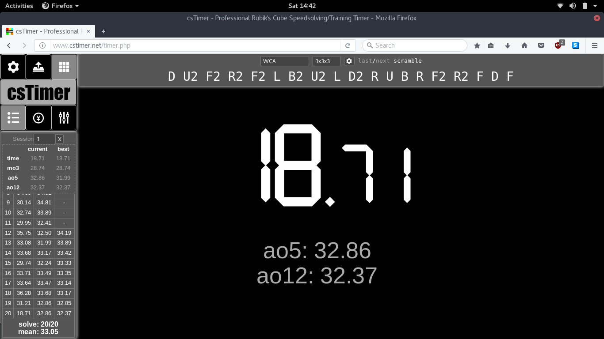

<div class="pages navbar-fixed">
	<!-- Page, "data-page" contains page name -->
	<div data-page="schoolmap" class="page navbar-fixed">
		<!-- Scrollable page content -->
		<div class="page-content">
			<p>Map of the ground floor</p>
			

			<map name="map">
				<!-- #$-:Image map file created by GIMP Image Map plug-in -->
				<!-- #$-:GIMP Image Map plug-in by Maurits Rijk -->
				<!-- #$-:Please do not edit lines starting with "#$" -->
				<!-- #$VERSION:2.3 -->
				<!-- #$AUTHOR:Chinmaya Krishnan Mahesh -->
				<area shape="rect" coords="554,270,946,485" data-popup=".popup-about" class="open-popup" href="#" />
				<area shape="rect" coords="11,186,165,230" href="cstimer.html" />
				<area shape="poly" coords="59,345,60,333,169,333,165,437,12,434,10,345,26,346" href="thirdone.html" />
			</map>
		</div>
	</div>
</div>